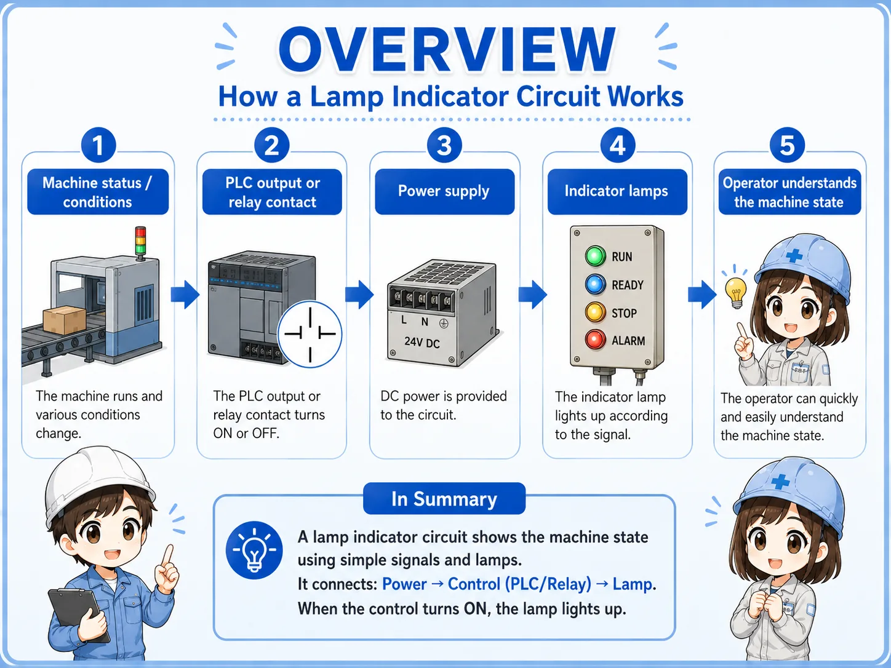
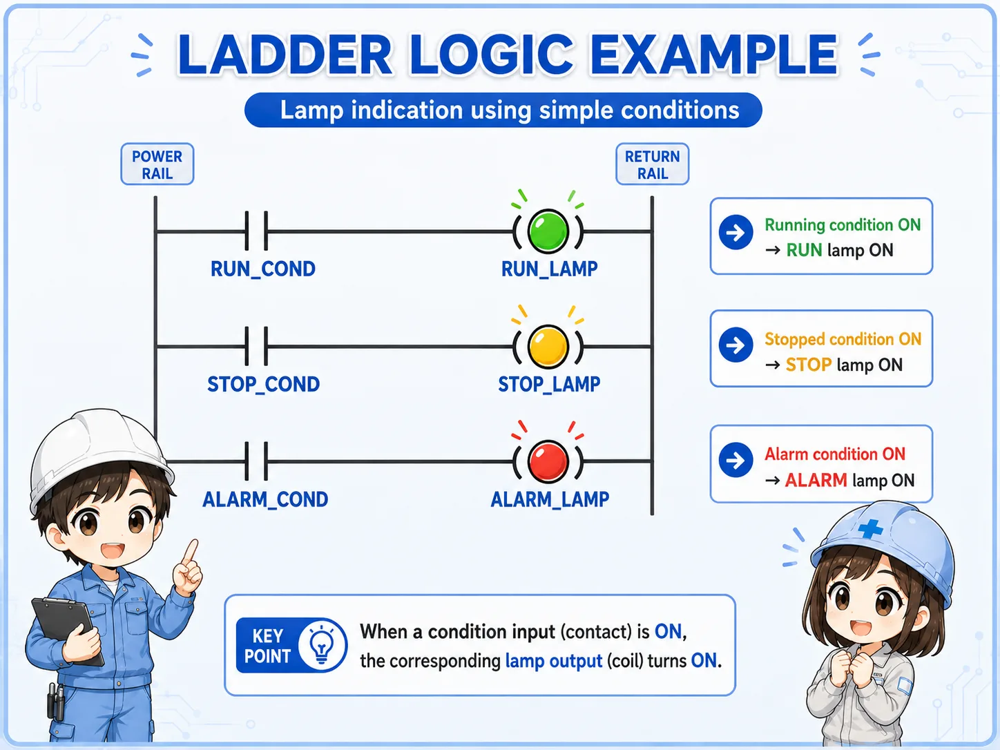
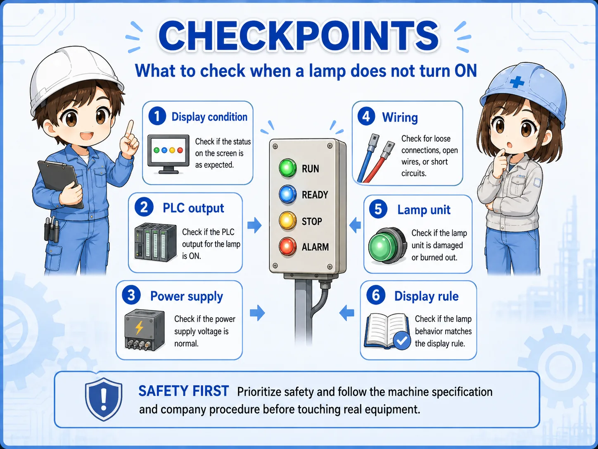

1. Start with the conclusion
Lamp indicator circuits make machine status easy to see.
A lamp indicator circuit is a basic circuit that tells the operator what state the machine is in. Typical examples are run, stop, alarm, and ready indicators on an operation panel or control panel.
The circuit itself may be simple, but it is very important in the field. If the indicators are unclear, it becomes harder to tell whether the machine is running normally, stopped normally, or stopped because of an alarm.
Indicator lamps are for communicating status
They usually do not drive the machine directly. Their main role is to make the machine state visible so operators and technicians can make the next decision faster.

SeniorLamp circuits may look plain, but they matter a lot. A clear status lamp can reduce confusion during operation and troubleshooting.

JuniorSo the lamp is not only a decoration. It is a circuit that tells people what the equipment is doing.
2. What is a lamp indicator circuit?
It turns indicator lamps ON and OFF according to machine conditions.
A lamp indicator circuit turns a lamp ON or OFF depending on the machine status. Common panel labels include RUN, STOP, ALARM, and READY.
In PLC-based equipment, the PLC output often turns the indicator lamp ON. For example, when a running flag or alarm condition becomes true, the corresponding lamp output is turned ON.

Field point
Even when the color rules differ by machine or company, the purpose is the same: make the current state easy to recognize without opening the control panel or reading the PLC program first.
3. Basic structure of a lamp indicator circuit
Think in four blocks: status, output, lamp, and power supply.
A lamp indicator circuit becomes easier to read when you separate it into the status you want to show, the PLC output or relay contact, the indicator lamp, and the lamp power supply.
Status to show
Decide what should be visible: running, stopped, alarm, ready, or another machine condition.
PLC output
The output turns ON when the display condition is true.
Indicator lamp
The lamp on the operation panel or control panel tells the operator the current status.
Power supply
The lamp needs the correct supply, such as DC 24 V in many panels. Always confirm the actual lamp specification.
Lamp colors should follow the equipment rule
Red, green, yellow, white, and other colors may have established meanings in a company or machine line. When adding or modifying indicators, match the existing rule and confirm the machine specification.
4. Common status indications
The best indicator is one that helps the operator know what to do next.
Typical indications include running, stopped, alarm, and ready. The exact set depends on the equipment, but the goal is to help the operator quickly understand the state and next action.
| Indication | Meaning | How to read it in the field |
|---|---|---|
| RUN | The machine or sequence is operating. | A motor, cylinder, automatic sequence, or other operation is active. |
| STOP | The machine is stopped. | It may be a normal stop. If alarm stop is different, it is better to separate it with another indication. |
| ALARM | An abnormal condition is active. | The machine may be stopped by emergency stop, thermal relay, sensor error, interlock, or another fault condition. |
| READY | The machine is ready to start. | Power, origin return, air pressure, safety condition, and other required conditions are satisfied. |
Alarm indication is more useful when it narrows down the cause
A single alarm lamp can still be useful, but machines with many possible faults often combine panel lamps with HMI messages so the cause is easier to trace.
5. Basic ladder logic idea
The key question is: which condition turns which lamp output ON?
In ladder logic, an indicator circuit is usually read as a condition and an output coil. If the running condition is true, the run lamp output turns ON. If the stop condition is true, the stop lamp output turns ON. If an alarm condition is true, the alarm lamp output turns ON.

- Run lamp: turns ON when the running condition is true.
- Stop lamp: turns ON when the stopped condition is true.
- Alarm lamp: turns ON when the alarm condition is true.
- Condition design: depends on run commands, stop states, alarm bits, interlocks, and machine rules.
The stop lamp condition is not always simple
Some machines turn the stop lamp ON when the run condition is OFF. Others use a more specific condition such as no alarm, stopped, and ready. Decide the condition based on what the operator needs to understand.
6. How to read it in GX Works3
Find the lamp output coil first, then trace the contacts on the left side.
When reading a lamp indicator circuit in GX Works3, first find the output coil for the lamp. Then check what conditions are placed to the left of that coil. A run lamp will normally have a running condition. An alarm lamp will normally have an alarm condition.
If the lamp does not turn ON, do not look only at the output coil. Trace the contacts on the left side one by one. Inputs, internal relays, alarm bits, reset status, and ready conditions can all affect the lamp output.
Find the output coil
Locate the PLC output assigned to the run lamp, stop lamp, alarm lamp, or ready lamp.
Read the left-side conditions
Check whether the contacts that enable the lamp output are actually true.
Check internal conditions
Look at running flags, alarm flags, ready conditions, reset status, and interlocks.
Check the real lamp side
Even if the ladder output is ON, wiring, power supply, or lamp unit failure can stop the lamp from lighting.
The ladder figure is a concept example
Actual GX Works3 programs depend on the PLC model, output number, internal devices, alarm conditions, HMI design, and machine specification. Use this article as a basic reading guide, not as a replacement for the actual program or manual.
7. Field checks when a lamp does not turn on
Separate the problem into condition, PLC output, power, wiring, and lamp unit.
When an indicator lamp does not turn ON, do not suspect only the lamp body. Check the display condition, PLC output, power supply, wiring, and lamp unit in order. If the ladder output is ON but the real lamp is OFF, the problem may be on the output side or lamp power side.

Display condition
Is the run, alarm, ready, or stop condition actually true in the PLC program?
PLC output
Is the lamp output ON in GX Works3 or in the PLC monitor?
Power supply
Is the correct voltage supplied to the lamp circuit? Does it match the lamp rating?
Wiring
Check terminal blocks, connectors, loose wires, and broken wires inside the panel.
Lamp unit
Check for LED unit failure, contact failure, wrong lamp voltage, or damaged parts.
Display rule
Confirm whether the lamp logic matches the machine specification and operator expectation.
Prioritize safety when checking real equipment
Even indicator lamp checks may involve live panel power or output circuits. Follow the machine specification, company procedure, lockout rules, and manufacturer manuals before touching wiring or changing logic.
8. Summary
Lamp indicators are small, but they strongly affect how easy the machine is to understand.
A lamp indicator circuit is a basic circuit for showing machine status clearly. Run, stop, alarm, and ready indicators help operators understand the current state and make troubleshooting faster.
In GX Works3, start by finding the output coil for the indicator lamp and then trace the contacts on the left side. When the real lamp does not turn ON, check not only the ladder condition but also the output, power supply, wiring, and lamp unit.
- Lamp indicator circuits visualize machine status.
- Run, stop, alarm, and ready indications should be separated by clear conditions.
- In ladder logic, read the lamp output and its enabling conditions together.
- When troubleshooting, check condition, output, power, wiring, and lamp unit in order.
Related articles
These articles connect naturally with panel indication, PLC I/O, and basic holding circuits.